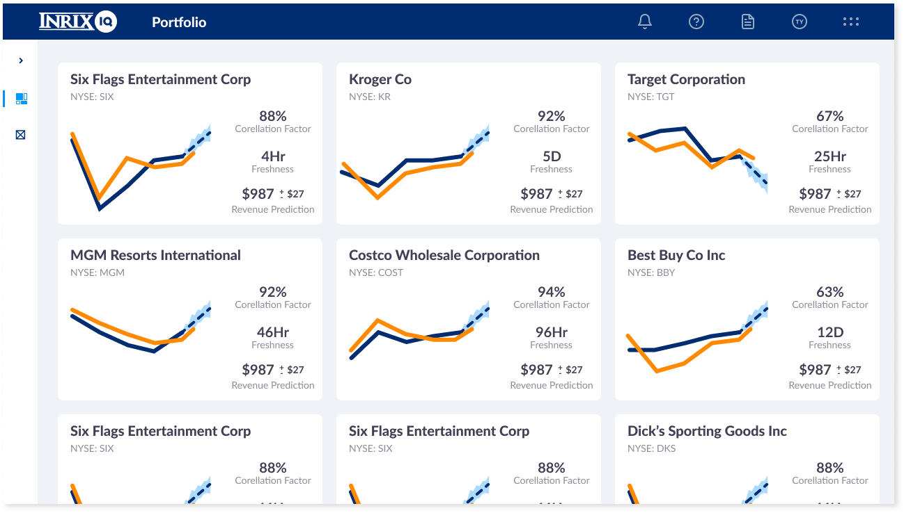
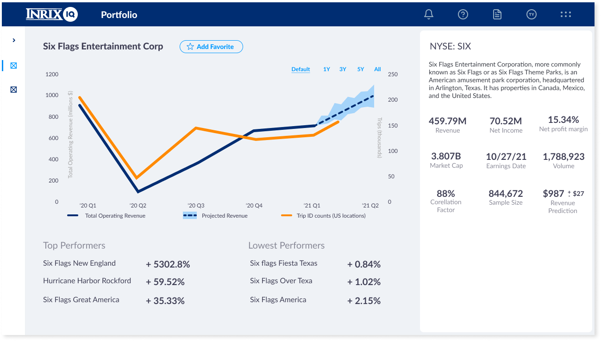
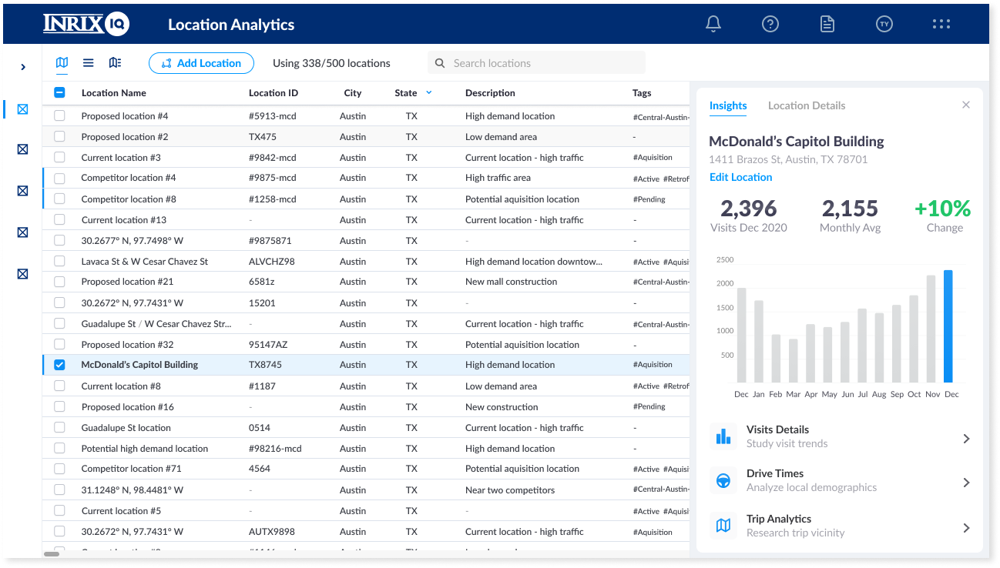

INRIX Fintech
INRIX was looking for a way to use their traffic data to potentially predict earnings for brick and mortar stores as well as in-person entertainment companies. For our prototype, we used a company almost completely dependent on foot traffic, Six Flags. If we could directly correlate traffic arriving at their parking lots with quarterly earnings, we had success.
I was the sole designer on this project. I worked directly with the Product Manager and engineers to get this product through to launch.
For this project, we kept it simple with a line graph comparing total trips to the six flags locations and their quarterly earnings. Our initial impressions were good but given covid, data may not have been completely accurate. The next quarter would be the real test as it was after a lot of lockdown restrictions were lifted and businesses were getting back to normal. When the earnings report happened, we were within 5 percent of what we had predicted based on traffic alone. Being able to show year over year traffic trends mirroring earnings was huge.
For the first version, we focussed on data display. We tied it with another piece of software used to create zones around locations like six flags and imported that data into our new financial display. At the time of me leaving INRIX, they had a number of customers interested in the software including Blackrock and Vanguard.
Dashboard showing all tracked companies
Individual company page with earnings projection based on data
Deep dive into company location traffic metrics